漯河万安康复医院 -- 健康管理中心
现代社会快节奏的生活方式往往会导致过重的压力，由此造成的精神紧张和不良生活习惯，如过多的应酬、吸烟、过量饮酒、缺乏运动、过度劳累等，都是危害人体健康的不良因素。
一些人一年在烟酒上的花费可能高达上万元，却忽视了健康管理的重要性。国内外大量预防医学研究表明，在预防上花1元钱，就可以节省8.59元的药费，还能相应节省约100元的抢救费、误工损失、陪护费等。
河南金康万安健康管理服务范围
健康管理案例分析
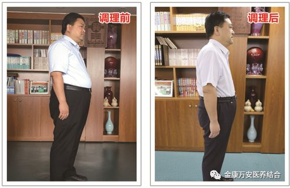王卫峰：漯河万安医院院长
电 话：15939545916
调理前：健康管理前体重202斤，血脂高达3.75，尿酸高达485，中重度脂肪肝，感觉全身乏力，注意力不集中，好瞌睡。
调理后：通过健康管理3个月，体重减脂35斤，尿酸转为正常值387，血脂转为正常值1.7，中重度脂肪肝转为轻度脂肪肝，现精力充沛，感觉浑身有使不完的劲，精神状态极佳。
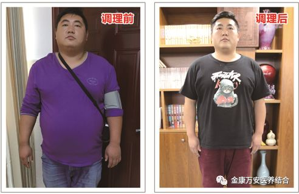
孙东东：男，28岁 卡车司机
电 话：13603956097
调理前：健康管理前体重260斤，高血压、高血脂
调理后：健康管理一个月后减脂39.8斤，血压正常、血脂正常
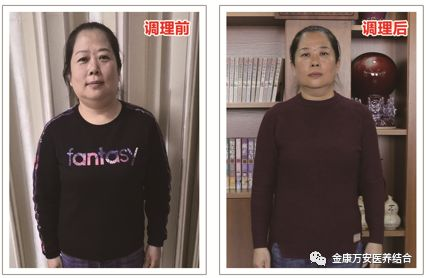
赵双黎：女
电 话：15039579936
调理前：健康管理前114.6斤，高血压、高血糖，头晕、无力
调理后：健康管理一月后减脂14.6斤，血压正常，血糖正常，头晕消失，精神状态极佳
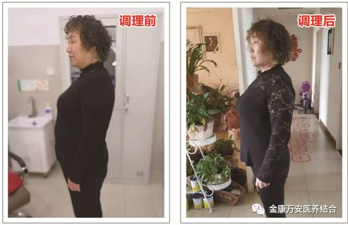
齐建平：女，57岁
电 话：13939550246
调理前：健康管理前体重141.6斤，患有糖尿病、高血压8年有余，睡眠质量差，易惊醒。
调理后：通过健康管理7天，血糖由原来的10.7降至7.7，管理20天，血糖降至餐前5.8，餐后7.1,；血压也在正常范围之内，管理20天，体重减脂13.8斤，现在睡眠好，精神气色都佳。
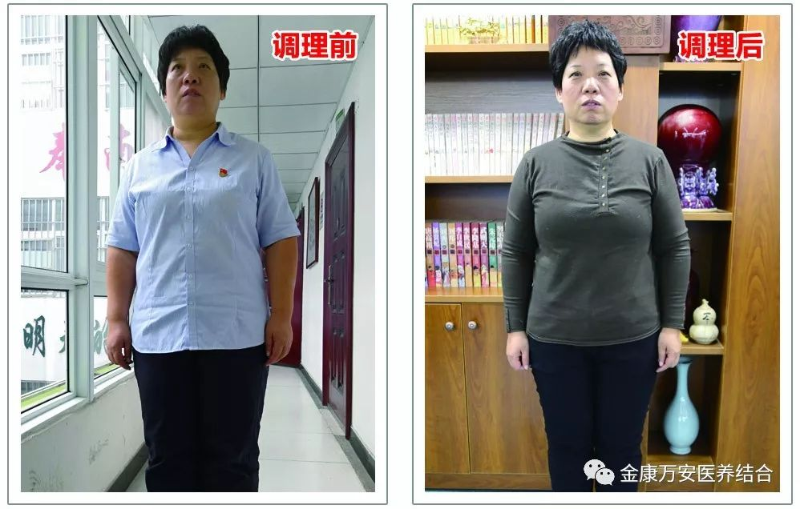
张莉：女 万安医院业务院长
电话：17737638967
调理前：体重170斤，高血压（170/120）、高血脂、高尿酸，心动过速，身困乏力懒动，气色体质欠佳。
调理后：通过健康管理一个月，体重减脂17.4斤，血压正常为110/80，心率为66—78次之间，尿酸、血脂均转为正常。现在每天精力充沛，精气神明显提升。
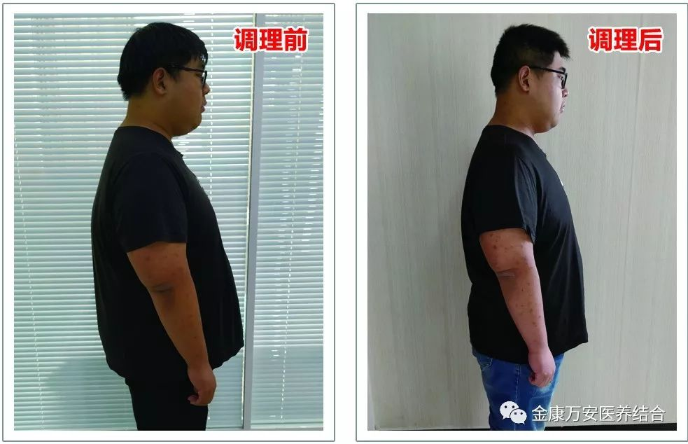
李浩诚：男
电话：18739561222
调理前：体重280.2斤，饮食休息无度，神倦懒动，血液粘稠度高，中度脂肪肝，脾胃失常，好瞌睡，面部青春痘严重影响美观。
调理后：健康管理一个月，减脂33斤，饮食休息规律，血液粘稠度明显下降，面部皮肤明显改善，睡眠质量佳。
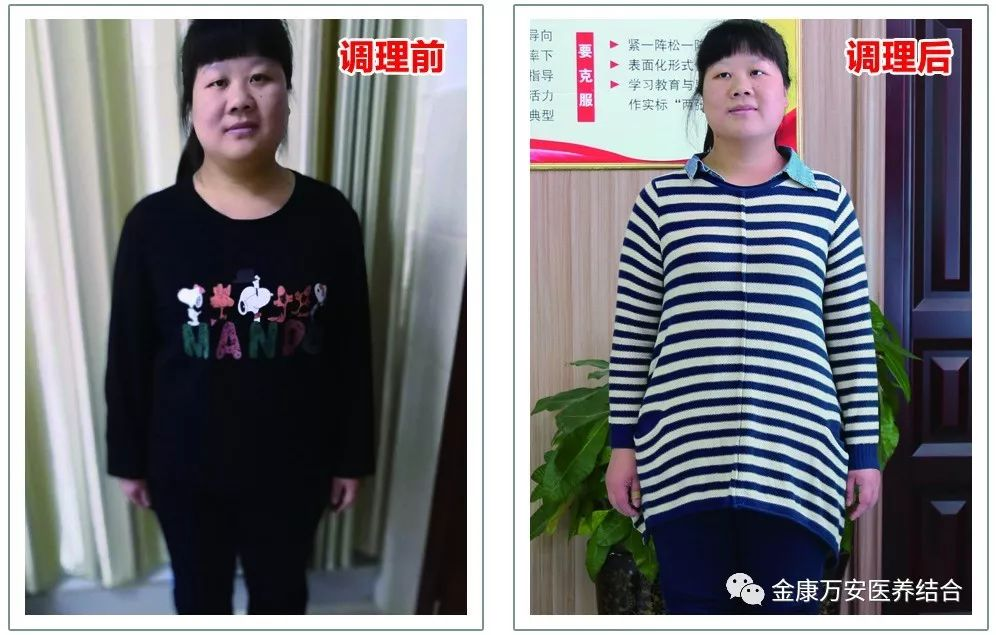
张二妞：女
电话：13721395072
调理前：体重158.2斤，面色暗黄，身体代谢紊乱，时常烦躁，胸闷不适。
调理后：健康管理一个月减脂23斤，面色红润，烦躁、胸闷现象有所好转。
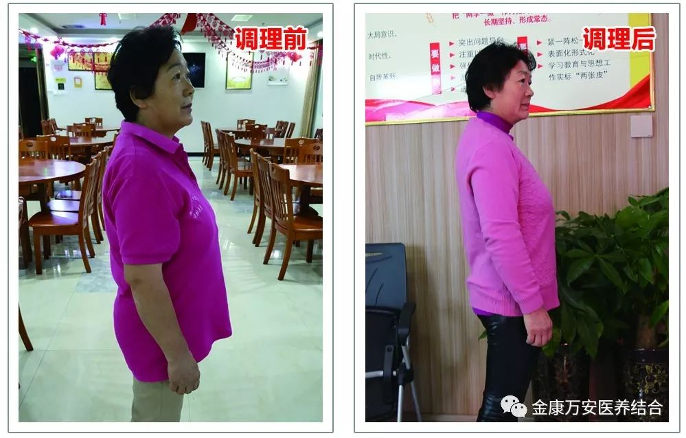
王爱荣：女
电话：13779784322
调理前：健康管理前体重136斤，头晕、头疼。
调理后：健康管理一个月后减脂16斤，头晕、头疼现象明显好转，之前身重如裹的感觉没有了，浑身轻松，气色佳。
健康管理专家介绍
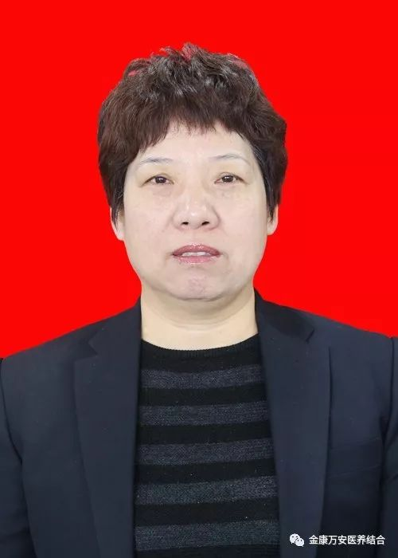咨询电话：17737638967
张莉：女，业务院长，大专学历，注册营养师，人体成分分析师，体重管理师，从事临床营养工作20多年，熟悉营养学的知识，对各类病人的营养治疗和营养支持积累了丰富的经验。尤其是擅长对高血压、高血脂、高尿酸、糖尿病、肥胖的营养指导，通过合理膳食，改变生活习惯，能够远离药物，达到控制血压、控制血糖、控制尿酸、降低血脂，控制体重的目的。

咨询电话：13938016069
万素华：女，业务院长，全科主治医师，临床营养师、公共营养师、体重管理师。从事临床工作25年，2007年进修于郑州大学公共卫生学临床营养专业，现为河南省临床营养优质服务联盟成员。擅长营养状况评估、慢性疾病及肥胖的饮食治疗和各种疾病治疗膳食的配置。
咨询电话：15039505822
黄丽方：女，大专学历，中共党员，心理咨询师，公共营养师，人体成分分析师、高级健康管理师。从事营养学4年余，根据不同病种制定个性化的饮食调理方案、膳食营养管理和指导。通过合理饮食，适量运动，健康管理，达到健康的生活方式和理想的生活状态。
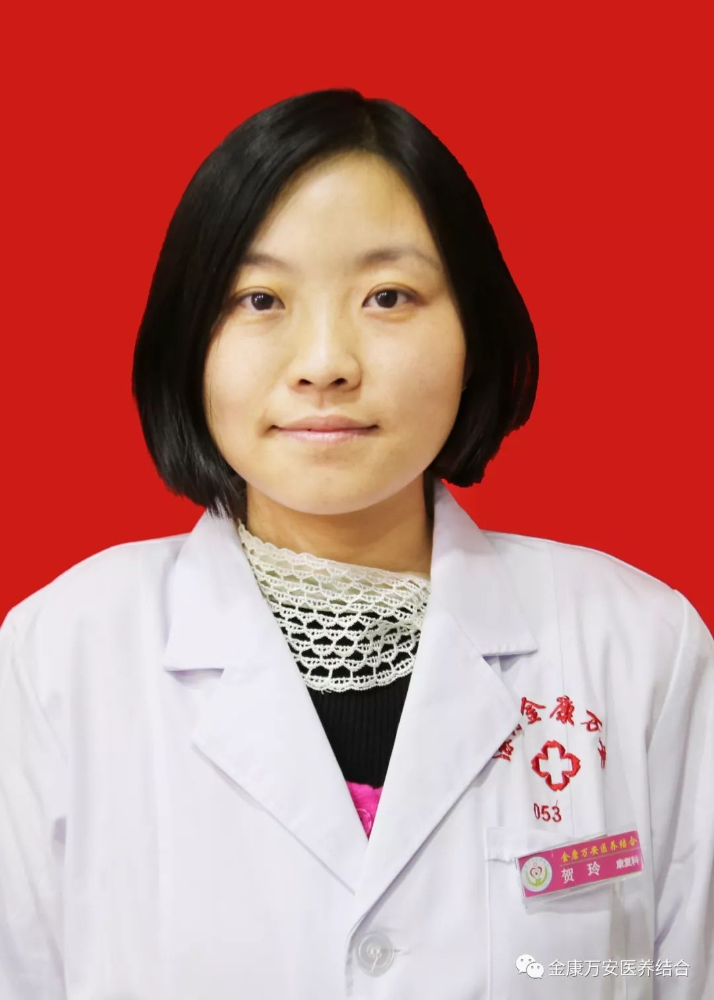
咨询电话：13939529262
贺玲：女，本科学历，高级健康管理师，高级健康保健师，高级经络师。多年来一直从事针灸、经络理疗康复保健工作，2017年年底到郑州黄河医专学院进修“吞咽治疗”“针灸减肥”“SFMA选择性功能动作评估”等康复治疗技术。工作中真诚敬业，积极乐观，具有极强的责任心和服务精神。以其现代化科学的健康管理知识与传统中医康复保健理念相结合，更加科学有效的管理健康。
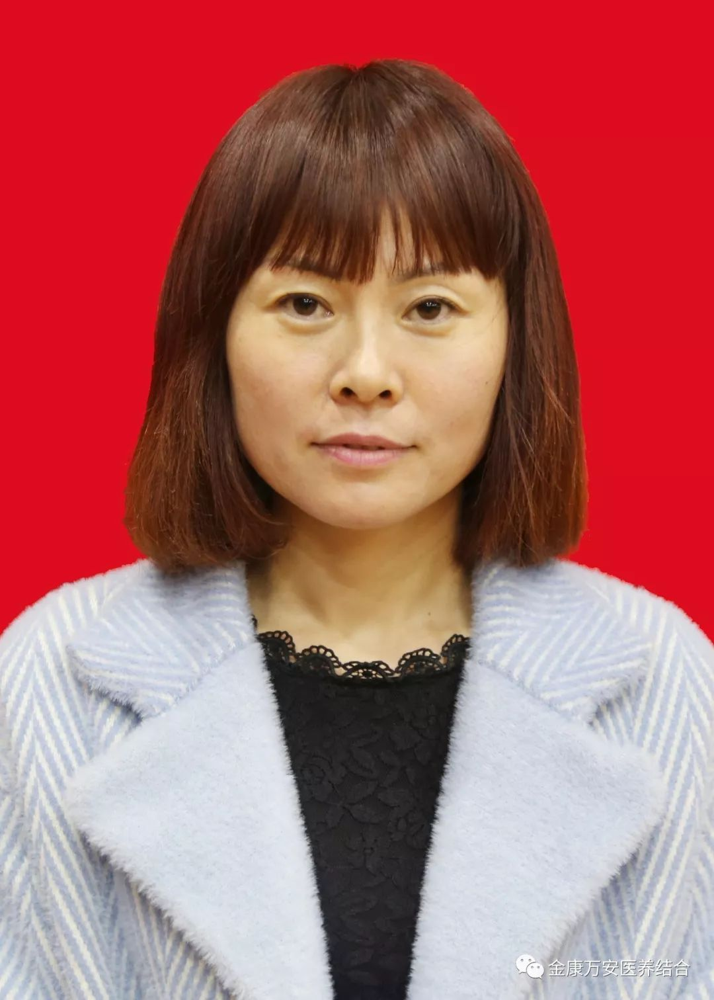咨询电话：13721341977
陈雪娟：女，专科学历，社区医学，健康管理师，公共营养师，人体成分分析师。6年以上工作经验，长期从事养生，理疗工作，规律的、科学的引导健康生活方式，合理饮食。针对肥胖人群、非健康人群和高危人群（糖尿病、高血压、心脑血管等疾病的患者）制定专属性管理方案。
河南金康万安健康管理中心，让您无痛苦丢掉赘肉、丢掉降压药、丢掉降糖药、丢掉降尿酸药！免费咨询电话： 0395—5607100 13721341977